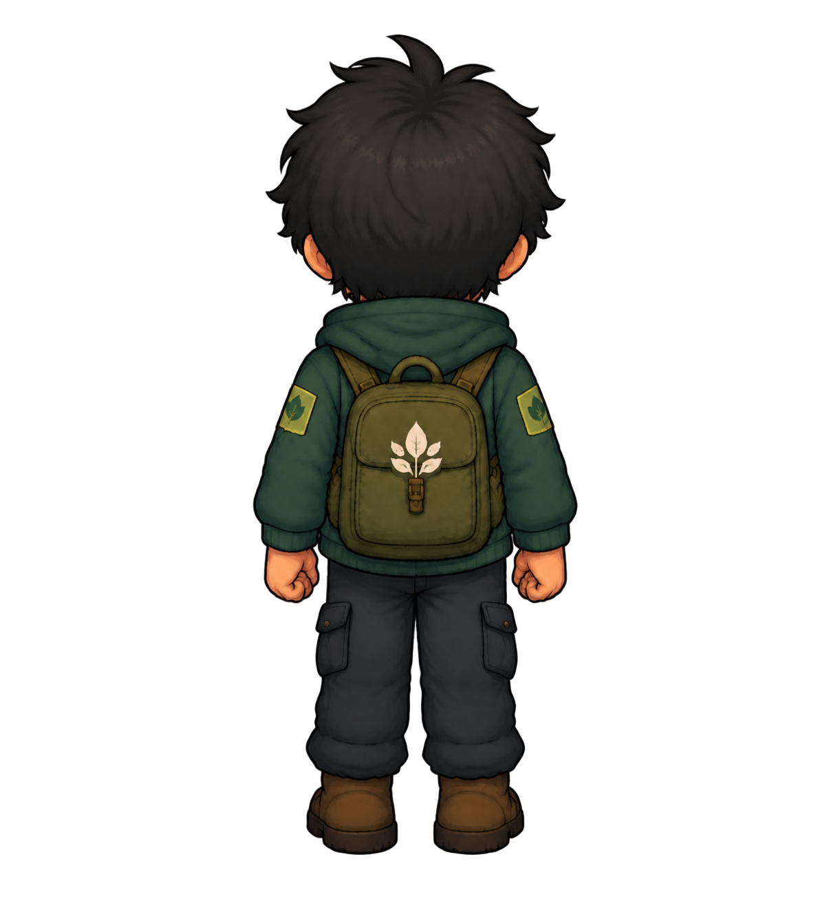
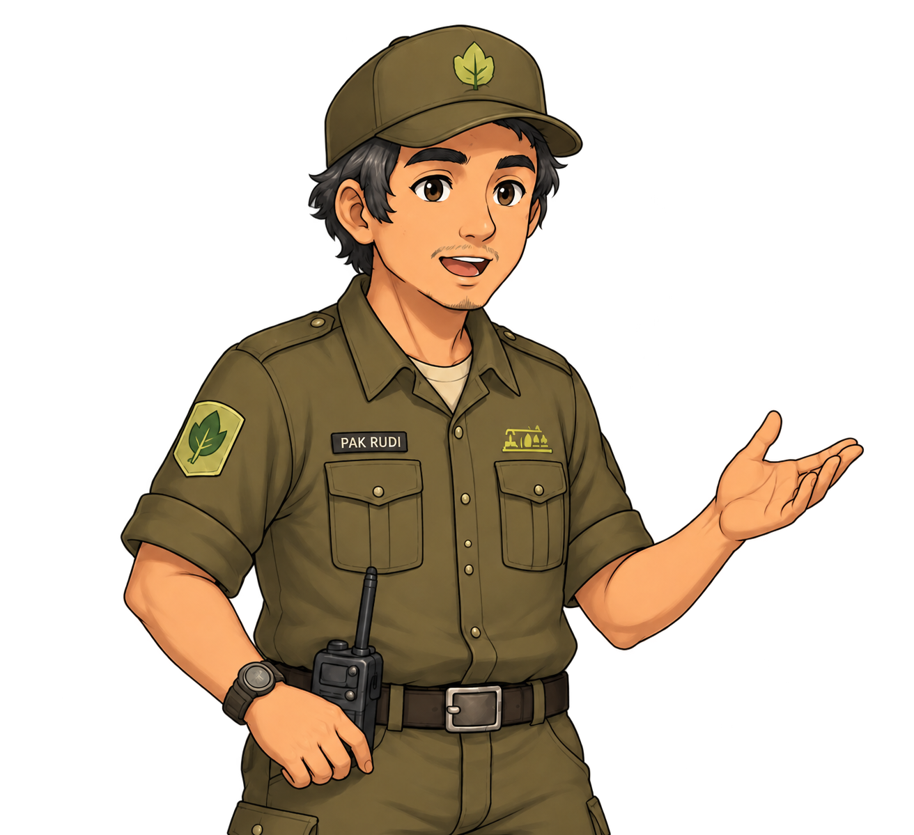
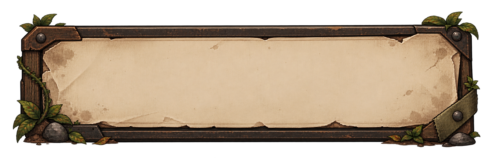
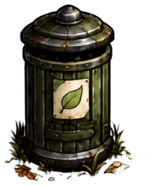
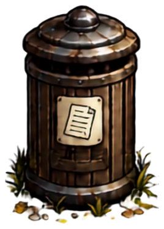
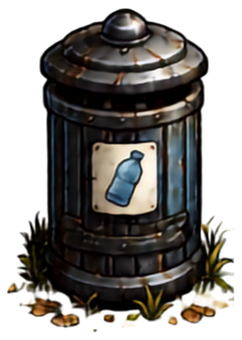
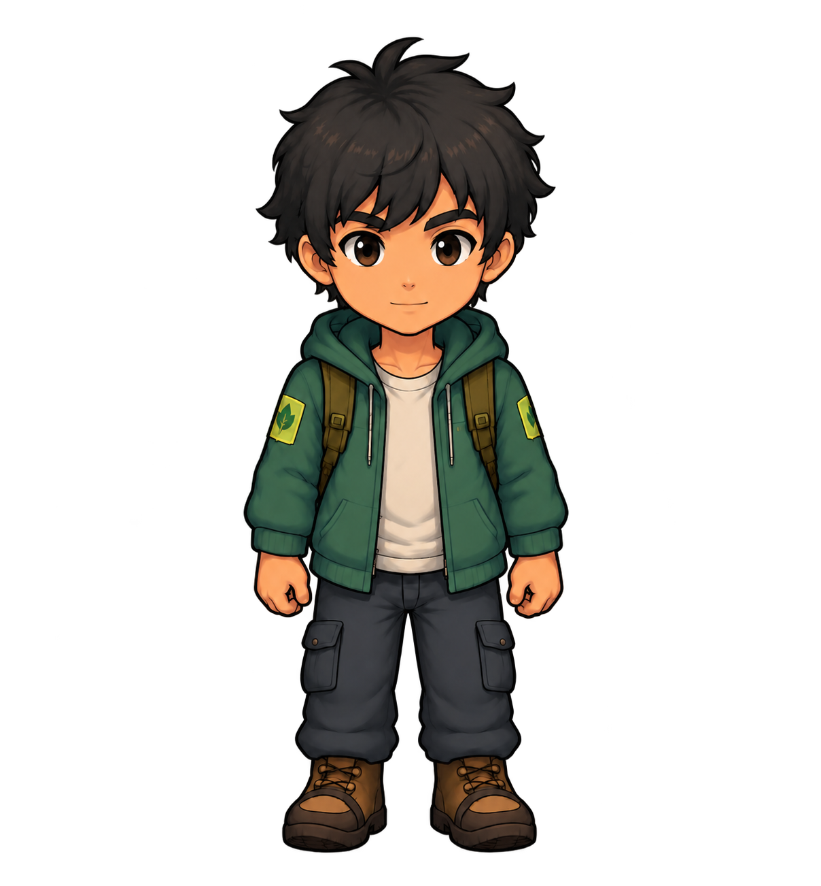
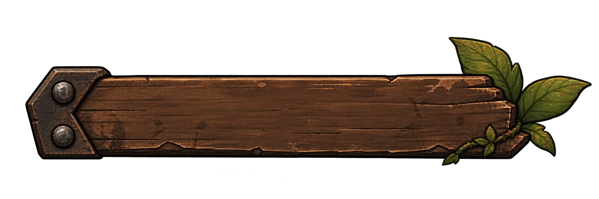
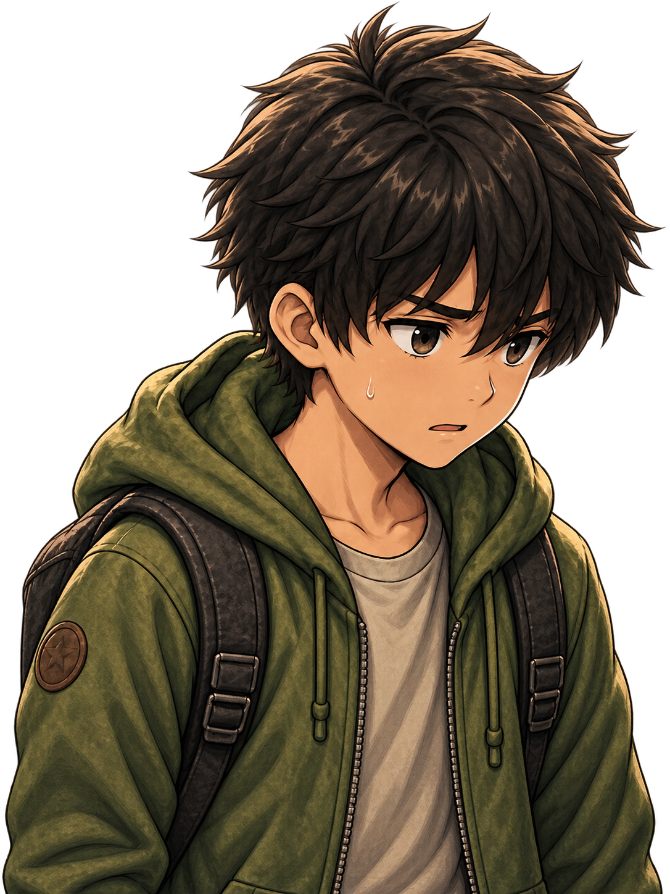

Main game baru?
Petualangan baru akan dimulai dari prolog.
TAP UNTUK MEMPERCEPAT
Memuat perjalanan...
Perjalanan tersimpan

EBICARA DENGAN PAK RUDI

 Pak Rudi
Pak Rudi
TAP UNTUK LANJUT
ORGANIK
KERTAS
ANORGANIK
FAMBIL

KEBERSIHAN TAMAN0% · 0/10 Sampah
WAKTU02:30
DIBAWA—
MEMASUKI TAMAN
Menyiapkan area...
TAHAN UNTUK MEMPERBAIKI
LEVEL 1 · TAMAN
Bersihkan Taman!
Kumpulkan 10 sampah, pilah dengan benar, lalu perbaiki fasilitas sebelum waktu 2 menit 30 detik habis.
- Gerak dengan W-A-S-D.
- Tekan E untuk mengambil, F untuk membuang.
- Tahan E selama 5 detik untuk memperbaiki fasilitas.
- Salah memilah mengurangi waktu 5 detik.
3
LEVEL 1 SELESAI!
HASIL PEMULIHAN TAMAN
Satu langkah kecil untuk lingkungan yang lebih baik.
Kebersihan 0%Sampah Dipilah 0 / 10Fasilitas Diperbaiki 0 / 3Sisa Waktu 00:00
WAKTU HABIS!
Taman belum berhasil dibersihkan.
Sampah Dibersihkan 0 / 10
Menjaga lingkungan membutuhkan ketelitian dan tindakan yang tepat.
!
EBICARA DENGAN PAK RUDI
Pak RudiORGANIK
KERTAS
ANORGANIK
[E] BERSIHKAN
PEMULIHAN SUNGAI0%0 / 3 TahapPILAH SAMPAH · 0 / 7
WAKTU02:30
DIBAWA—
MEMASUKI AREA SUNGAI
Menyiapkan aliran...
TAP UNTUK MELANJUTKAN
PemainLEVEL 2 · SUNGAI
Pulihkan Sungai!
Pilah 7 sampah, tangkap 10 sampah mengambang tanpa mengenai ikan, lalu angkat 6 sumbatan sebelum 2 menit 30 detik habis.
3
SAMPAH TERTANGKAP 0 / 10
HP ♥♥♥🐟 Jangan tangkap ikan · −1 HP
02:30🥅
WASD / TOMBOL ARAH · SENTUH / GESER KE SEGALA ARAH
TANGKAP 10 SAMPAH · HINDARI IKAN
PemainTAP UNTUK LANJUT
SUMBATAN 0 / 6
02:30AREA PEMBUANGAN
DRAG SEMUA SAMPAH KE AREA PEMBUANGAN
WAKTU HABIS!
Sungai belum berhasil dipulihkan.
Progress Terakhir Tahap 1 · 0 / 5
LEVEL 2 SELESAI!
HASIL PEMULIHAN SUNGAI
Aliran yang bersih menjaga kehidupan di sekitarnya.
Sampah Dipilah 0 / 7Sampah Dijaring 0 / 10Sumbatan Diangkat 0 / 6Sisa Waktu 00:00
!
EBICARA DENGAN PAK RUDI
Pak Rudi[E] AMBIL KAYU
TAHAP 1 / 4PUNGUT KAYU BERSERAKAN0 / 6
WAKTU02:30
MEMASUKI HUTAN
Menyiapkan area penghijauan...
TAHAN E UNTUK MENGGALI
MINIGAME PENYIRAMAN
ATUR ALIRAN AIR
Tekan SIRAM SEKARANG saat jarum berada di zona hijau. Tepatkan tiga kali untuk menyiram satu bibit.
0 / 3 TEPAT
Tekan saat jarum berada di zona hijau.
TAP UNTUK MEMULAI DIALOG
PemainLEVEL 3 · HUTAN
HIJAUKAN KEMBALI HUTAN
Pungut 6 kayu, gali 3 lubang dengan menahan E, tanam 3 bibit, lalu selesaikan minigame penyiraman sebelum 2 menit 30 detik habis.
LEVEL 3 SELESAI!
HASIL PEMULIHAN HUTAN
Hutan yang dijaga hari ini akan melindungi kehidupan di masa depan.
Kayu Dipungut 0 / 6Lubang Digali 0 / 3Bibit Ditanam 0 / 3Bibit Disiram 0 / 3Sisa Waktu 00:00
WAKTU HABIS!
Hutan belum berhasil dipulihkan.
Progress penghijauan tetap dihitung.
[E] PERIKSA
TAHAP 1 / 3BERSIHKAN 4 NODA LANTAI0 / 4
WAKTU02:30

PemainTAHAN E UNTUK MEMBERSIHKAN
HASIL IDENTIFIKASI
KERUSAKAN DITEMUKAN
02:30TAHAP 2 / 3
PILAH LIMBAH
LEVEL 4 SELESAI!
PABRIK PULIH DAN AMAN
Industri yang bertanggung jawab dapat berjalan bersama dengan lingkungan.
Noda Dibersihkan 0 / 4Limbah Dipilah 0 / 12Filter Udara 0%Sisa Waktu 00:00
WAKTU HABIS!
Sumber pencemaran belum terkendali.
Progres pemulihan tetap dihitung.
SIMPAN PERJALANAN
PILIH SLOT
Pilih tempat untuk menyimpan checkpoint perjalanan.
Keluar ke Menu Utama?
Progres yang belum disimpan akan hilang. Progres pada slot penyimpanan tetap aman.
OFFICIAL GAME CREDITS
CREDITS
Petualangan Hijau
Gim edukasi interaktif tentang kepedulian lingkungan, pengelolaan sampah, dan pemulihan ekosistem.
Game Design
Programming
Visual & UI
Story & Education
01
CORE DEVELOPMENT TEAM
MZ
Muhammad Zaky ArrosyidGame Development Team
AE
Asa Enggal DavianaGame Development Team
RJ
Rahmadina Jogi SiregarGame Development Team